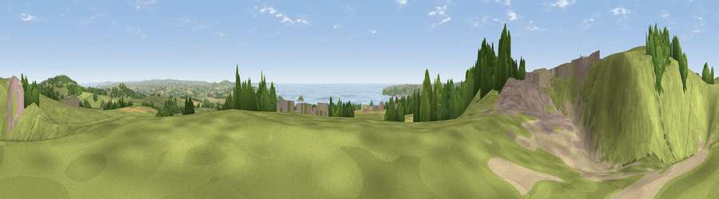

Viewpoint near Ludgvan
#2622 in England · top 8% of its area beats it · near LudgvanThe view, rendered

A 360° render of this exact spot computed from the terrain model, tree cover and land cover — summer colours, afternoon light, calibrated against photographs of famous viewpoints. Real trees, hedges and buildings will differ in detail.
The panorama
Grey silhouette: terrain skyline in each direction (720 bearings, Earth curvature and refraction included). Dashed green: skyline with trees (+15 m) and buildings (+8 m) as obstacles. Blue strip: how far the ground is visible on each bearing.
Where the view opens
Wedge length = distance to the farthest visible ground on that bearing (vegetation-aware). Rings at 10, 25 and 50 km.
What fills the view
64% grassland · 12% bare ground · 8% woodland · 6% water · 5% cropland · 4% built-up
Angular shares of the visible panorama (visual magnitude), not map area. Landscape diversity 0.53 (0–1 Shannon).
Key numbers
More beautiful places nearby
The staircase of upgrades: each row has a higher view potential than everything closer. Driving times are estimates from straight-line distance, calibrated against real road routing — check an actual route before setting out.
| Place | Direction | Drive | Score |
|---|---|---|---|
| Viewpoint near Gulval | WSW · 0 km | ~1 min | 76.6 |
| Viewpoint near Towednack | NW · 0 km | ~2 min | 79.1 |
| Viewpoint near Towednack | NNW · 4 km | ~10 min | 83.2 |
| Rosewall Hill | N · 5 km | ~10 min | 88.0 |
| Viewpoint near Combe Martin | NE · 158 km | ~181 min | 88.9 |
| Holdstone Hill | NE · 160 km | ~182 min | 90.2 |
| The Knoll | ENE · 211 km | ~228 min | 91.0 |
50.15766, -5.51790 · source: screening · position refined by local search. Computed location — check access rights before visiting.